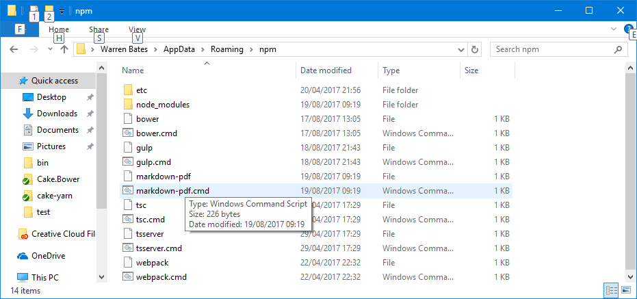

No blog post on Cake is complete without a few puns, and bonus, now while you're googling technical stuff you always get a few recipes for delicious cakes thrown in. So what is cake and why do we need add ins?
Cake (C# Make) is a cross platform build automation system with a C# DSL to do things like compiling code, copy files/folders, running unit tests, compress files and build NuGet packages.
I've recently been switching my organisation from a psake build process to Cake. The psake process had been in place for a long time, but since psake is no longer actively maintained and doesn't support the latest version of Visual Studio we knew we had to move to something different to allow us to use the latest .Net framework and C# language features. Enter Cake. Cake scripts are written in C#, and support using methods from referenced add ins that have been compiled into a dll. As C# developers being able to write our build process in C# is a no brainer right? You still use powershell to compile and run the cake script, but that's all taken care of by the bootstrapped build.ps1 that cake provides. Anyway we're here to talk about cake addins; if you need more information on getting started with cake please visit cakebuild.net.
At the time of writing there are 166 cake addins available performing a variety of jobs. We're going to write an addin which runs a command line tool available from npm. Based on this issue I decided to make a markdown-pdf addin for this walkthrough.
Start with a new .NET framework class library project in Visual Studio and add the Cake.Core Nuget project. We're going to start with two classes and an interface which will form the basics of our addin.
namespace Cake.Markdown_Pdf
{
public interface IMarkdownPdfRunner
{
}
public class MarkdownPdfRunnerSettings : ToolSettings
{
}
public class MarkdownPdfRunner : Tool<MarkdownPdfRunnerSettings>, IMarkdownPdfRunner
{
}
}
The interface will define the commands that can be run from the cake script. The settings describes the command to be run and will generate the arguments that get passed into it. The runner will implement the interface as well as helping cake to locate the command we want to run.
MarkdownPdfRunner basics
You'll need a constructor that calls the Tool<TSettings> base constructor.
public MarkdownPdfRunner(IFileSystem fileSystem, ICakeEnvironment environment, IProcessRunner processRunner, IToolLocator tools)
: base(fileSystem, environment, processRunner, tools) { }
Then override the GetToolName() method and get it to return a string giving the name of your tool
protected override string GetToolName() => "Markdown-pdf Runner";
Override GetToolExecutableNames(), here is where we provide the names of the files the ToolLocator needs to look for. To find out go to %appdata%\roaming\npm on your machine.

This will usually be the normal command you'd run suffixed with .cmd followed without the suffix
protected override IEnumerable<string> GetToolExecutableNames() => new[] { "markdown-pdf.cmd", "markdown-pdf" };
I'm a big fan of expression bodied methods for these trivial one liners in case you hadn't realised ;) One final thing to add at this stage is a method that will process the settings and convert them to arguments, or more accurately a ProcessArgumentBuilder All it will really do is call a method on the settings object that knows how to do that for the specific settings type that we've passed in.
protected static ProcessArgumentBuilder GetSettingsArguments(MarkdownPdfRunnerSettings settings)
{
var args = new ProcessArgumentBuilder();
settings?.Evaluate(args);
return args;
}
Put it all together and so far our runner class should look like this. We'll start adding some commands to it shortly.
public class MarkdownPdfRunner : Tool<MarkdownPdfRunnerSettings>, IMarkdownPdfRunner
{
public MarkdownPdfRunner(IFileSystem fileSystem, ICakeEnvironment environment, IProcessRunner processRunner, IToolLocator tools)
: base(fileSystem, environment, processRunner, tools) { }
protected override string GetToolName() => "Markdown-pdf Runner";
protected override IEnumerable<string> GetToolExecutableNames() => new[] { "markdown-pdf.cmd", "markdown-pdf" };
protected static ProcessArgumentBuilder GetSettingsArguments(MarkdownPdfRunnerSettings settings)
{
var args = new ProcessArgumentBuilder();
settings?.Evaluate(args);
return args;
}
}
MarkdownPdfRunnerSettings
This class is going to contain the properties that apply to all the commands we're going to use and the instructions for converting those into command line arguments. Markdown-pdf doesn't have separate "commands" just options so we only need one settings type. See Cake.Bower for an example of a plugin that uses multiple settings types. We now need to know what options are available to us through markdown-pdf's CLI. Handily this is available here.
Usage: markdown-pdf [options] <markdown-file-path>
Options:
-h, --help output usage information
-V, --version output the version number
<markdown-file-path> Path of the markdown file to convert
-c, --cwd [path] Current working directory
-p, --phantom-path [path] Path to phantom binary
-h, --runnings-path [path] Path to runnings (header, footer)
-s, --css-path [path] Path to custom CSS file
-z, --highlight-css-path [path] Path to custom highlight-CSS file
-m, --remarkable-options [json] Options to pass to Remarkable
-f, --paper-format [format] 'A3', 'A4', 'A5', 'Legal', 'Letter' or 'Tabloid'
-r, --paper-orientation [orientation] 'portrait' or 'landscape'
-b, --paper-border [measurement] Supported dimension units are: 'mm', 'cm', 'in', 'px'
-d, --render-delay [millis] Delay before rendering the PDF
-t, --load-timeout [millis] Timeout before the page is rendered in case `page.onLoadFinished` isn't fired
-o, --out [path] Path of where to save the PDF
I'm going to add a boolean property for each of the help and version switches, and string/int/enum properties for each of the other values as appropriate, except for the working directory. The working directory is already a property on the ToolSettings we inherited from. Our MarkdownPdfRunnerSettings class should now look like this
public class MarkdownPdfRunnerSettings : ToolSettings
{
public bool Help { get; set; }
public bool Version { get; set; }
public string FilePath { get; set; }
public string PhantomPath { get; set; }
public string RunningsPath { get; set; }
public string CssPath { get; set; }
public string HighlightCssPath { get; set; }
public string RemarkableOptions { get; set; }
public MarkdownPdfPaperFormat PaperFormat { get; set; }
public MarkdownPdfOrientation Orientation { get; set; }
public string PaperBorder { get; set; }
public int RenderDelay { get; set; }
public int LoadTimeout { get; set; }
public string OutFilePath { get; set; }
}
public enum MarkdownPdfPaperFormat
{
None,
A3,
A4,
A5,
Legal,
Letter,
Tabloid
}
public enum MarkdownPdfOrientation
{
None,
Portrait,
Landscape
}
I've obviously made some decisions about what type to use to store details about the property, such as an enum for PaperFormat and Orientation and you'll need to make similar decisions when creating your adding depending on what options are available for the tool you're creating an addin for. We need to add a method that will evaulate these properties and produce our ProcessArgumentBuilder for use in the runner. This is where the evaluate command comes in. Effectively it will query each property and the relevant string to the ProcessArgumentBuilder passed in.
internal void Evaluate(ProcessArgumentBuilder args)
{
if (Help)
args.Append("--help");
if (Version)
args.Append("--version");
if (!string.IsNullOrWhiteSpace(PhantomPath))
args.Append($"--phantom-path {PhantomPath}");
if (!string.IsNullOrWhiteSpace(RunningsPath))
args.Append($"--runnings-path {RunningsPath}");
if (!string.IsNullOrWhiteSpace(CssPath))
args.Append($"--css-path {CssPath}");
if (!string.IsNullOrWhiteSpace(HighlightCssPath))
args.Append($"--highlight-css-path {HighlightCssPath}");
if (!string.IsNullOrWhiteSpace(RemarkableOptions))
args.Append($"--remarkable-options {RemarkableOptions}");
if (PaperFormat != MarkdownPdfPaperFormat.None)
args.Append($"--paper-format {PaperFormat}");
if (Orientation != MarkdownPdfOrientation.None)
args.Append($"--paper-orientation {Orientation}");
if (!string.IsNullOrWhiteSpace(PaperBorder))
args.Append($"--paper-border {PaperBorder}");
if (RenderDelay > 0)
args.Append($"--render-delay {RenderDelay}");
if (LoadTimeout > 0)
args.Append($"--load-timeout {LoadTimeout}");
if (!string.IsNullOrWhiteSpace(OutFilePath))
args.Append(OutFilePath);
if (!string.IsNullOrWhiteSpace(FilePath))
args.Append(FilePath);
}
Setting properties
I'm going to add a set of fluent extension methods for setting these properties so we can set several of them at once in a single lambda expression.
public static class MarkdownPdfRunnerSettingsExtensions
{
public static MarkdownPdfRunnerSettings UseWorkingDirectory(this MarkdownPdfRunnerSettings settings, DirectoryPath workingDirectory)
{
settings.WorkingDirectory = workingDirectory;
return settings;
}
public static MarkdownPdfRunnerSettings WithHelp(this MarkdownPdfRunnerSettings settings)
{
settings.Help = true;
return settings;
}
public static MarkdownPdfRunnerSettings WithVersion(this MarkdownPdfRunnerSettings settings)
{
settings.Version = true;
return settings;
}
public static MarkdownPdfRunnerSettings WithPhantomPath(this MarkdownPdfRunnerSettings settings, string phantomPath)
{
settings.PhantomPath = phantomPath;
return settings;
}
public static MarkdownPdfRunnerSettings WithRunningsPath(this MarkdownPdfRunnerSettings settings, string runningsPath)
{
settings.RunningsPath = runningsPath;
return settings;
}
public static MarkdownPdfRunnerSettings WithCssPath(this MarkdownPdfRunnerSettings settings, string cssPath)
{
settings.CssPath = cssPath;
return settings;
}
public static MarkdownPdfRunnerSettings WithHighlightCssPath(this MarkdownPdfRunnerSettings settings, string highlightCssPath)
{
settings.HighlightCssPath = highlightCssPath;
return settings;
}
public static MarkdownPdfRunnerSettings WithRemarkableOptions(this MarkdownPdfRunnerSettings settings, string remarkableOptions)
{
settings.RemarkableOptions = remarkableOptions;
return settings;
}
public static MarkdownPdfRunnerSettings WithPaperFormat(this MarkdownPdfRunnerSettings settings, MarkdownPdfPaperFormat paperFormat)
{
settings.PaperFormat = paperFormat;
return settings;
}
public static MarkdownPdfRunnerSettings WithOrientation(this MarkdownPdfRunnerSettings settings, MarkdownPdfOrientation orientation)
{
settings.Orientation = orientation;
return settings;
}
public static MarkdownPdfRunnerSettings WithPaperBorder(this MarkdownPdfRunnerSettings settings, string border)
{
settings.PaperBorder = border;
return settings;
}
public static MarkdownPdfRunnerSettings WithRenderDelay(this MarkdownPdfRunnerSettings settings, int renderDelay)
{
settings.RenderDelay = renderDelay;
return settings;
}
public static MarkdownPdfRunnerSettings WithLoadTimeout(this MarkdownPdfRunnerSettings settings, int loadTimeout)
{
settings.LoadTimeout = loadTimeout;
return settings;
}
public static MarkdownPdfRunnerSettings WithFilePath(this MarkdownPdfRunnerSettings settings, string filePath)
{
settings.FilePath = filePath;
return settings;
}
public static MarkdownPdfRunnerSettings WithOutFilePath(this MarkdownPdfRunnerSettings settings, string outFilePath)
{
settings.OutFilePath = outFilePath;
return settings;
}
}
Commands
Finally we're going to add the commands to process the settings and run the command line tool. Add the following two definitions to the interface (again for addins that will require more than one command use Cake.Bower as an example)
IMarkdownPdfRunner Run(Action<MarkdownPdfRunnerSettings> configure = null);
IMarkdownPdfRunner Run(MarkdownPdfRunnerSettings settings);
Then to the MarkdownPdfRunner class to fill in the implementation The first method will create a new settings object and run the lambda passed in before passing on the responsibility for execution to the other method.
public IMarkdownPdfRunner Run(Action<MarkdownPdfRunnerSettings> configure = null)
{
var settings = new MarkdownPdfRunnerSettings();
configure?.Invoke(settings);
return Run(settings);
}
The method accepting a settings object will use our GetSettingsArguments method from earlier to build the ProcessArgumentBuilder and pass that on to the base classes Run method which will run the tool passing in the arguments given
public IMarkdownPdfRunner Run(MarkdownPdfRunnerSettings settings)
{
var args = GetSettingsArguments(settings);
Run(settings, args);
return this;
}
The only thing that's missing now (apart from a build script, unit tests, etc.) is the ability to run this from a cake file. In order to call any of this from cake you need a cake alias. I'm going to show two different options for this part, one using a CakeMethodAlias and the other a CakePropertyAlias. For this particular addin the CakeMethodAlias is probably the most suitable since there aren't different commands which the markdown-pdf tool accepts, but for something like npm, bower, gulp, etc which have subcommands the property alias approach is the way to go. The difference between the two is that a CakePropertyAlias can't accept arguments.
CakeMethodAlias
Here we'll create a new static class with an ICakeContext extension method. My adding the CakeMethodAlias attribute this method will be available to us from our cake script. This method will instantiate a runner and call its Run method.
public static class MarkdownPdfRunnerAliases
{
[CakeMethodAlias]
public static IMarkdownPdfRunner MarkdownPdf(this ICakeContext context,
Action<MarkdownPdfRunnerSettings> configure)
{
if (context == null)
throw new ArgumentNullException(nameof(context));
var runner = new MarkdownPdfRunner(context.FileSystem, context.Environment, context.ProcessRunner, context.Tools);
return runner.Run(configure);
}
}
This addin is now ready to be used in a cake script as below.
#reference "./bin/Cake.Markdown-Pdf.dll" // Use the relative path to your Cake.Markdown-Pdf.dll file built by Visual Studio.
var target = Argument("target", "Default");
Task("Default")
.Does(() =>
{
MarkdownPdf(s => s.WithFilePath("README.md"));
});
RunTarget(target);
CakePropertyAlias
This approach will return a new MarkdownPdfRunner. This exposes all of the public methods on the runner to the cake script through the object, which is why this approach is more useful to addins that have multiple commands (e.g. bower's install, update, and uninstall commands etc.)
[CakePropertyAlias]
public static IMarkdownPdfRunner MarkdownPdf(this ICakeContext context)
{
if (context == null)
throw new ArgumentNullException(nameof(context));
return new MarkdownPdfRunner(context.FileSystem, context.Environment, context.ProcessRunner, context.Tools);
}
This changes the call from MarkdownPdf(s => s.WithFilePath("README.md")); to MarkdownPdf.Run(s => s.WithFilePath("README.md"));
A subtle difference but as stated, important if there's more than one command that needs to be run.
Final steps
- Check out Cake.Testing for some utilities to help with testing these scripts. I'll write a follow up blog post soon with more details on how to unit test this addin. Add to nuget, and then you can change the #reference line to #addin and your script will automatically download it when run.
- Setup a cake script for this project.
- Check out Cake-Contrib on Github and consider adding your addin on there. I started with Cake.Bower, and decided to write this blog post off the back of that.
The resulting addin from this blog post can be found at Wozzo/Cake.Markdown-Pdf on github and the blog series can be found at Wozzo/Cake_Addin_Blog_Posts